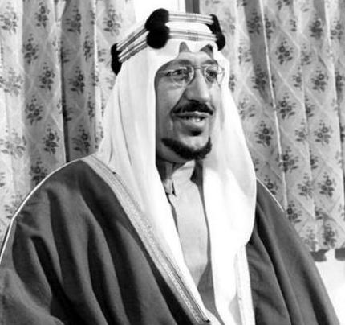
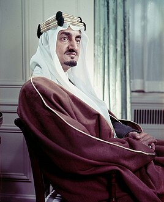
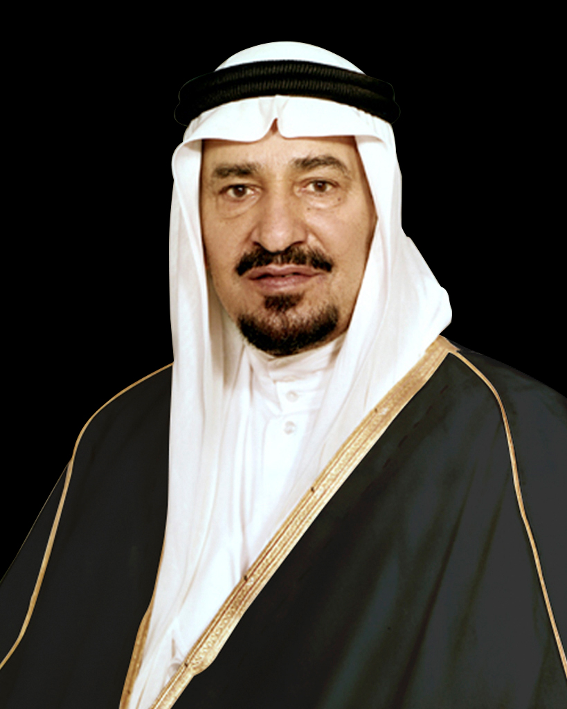
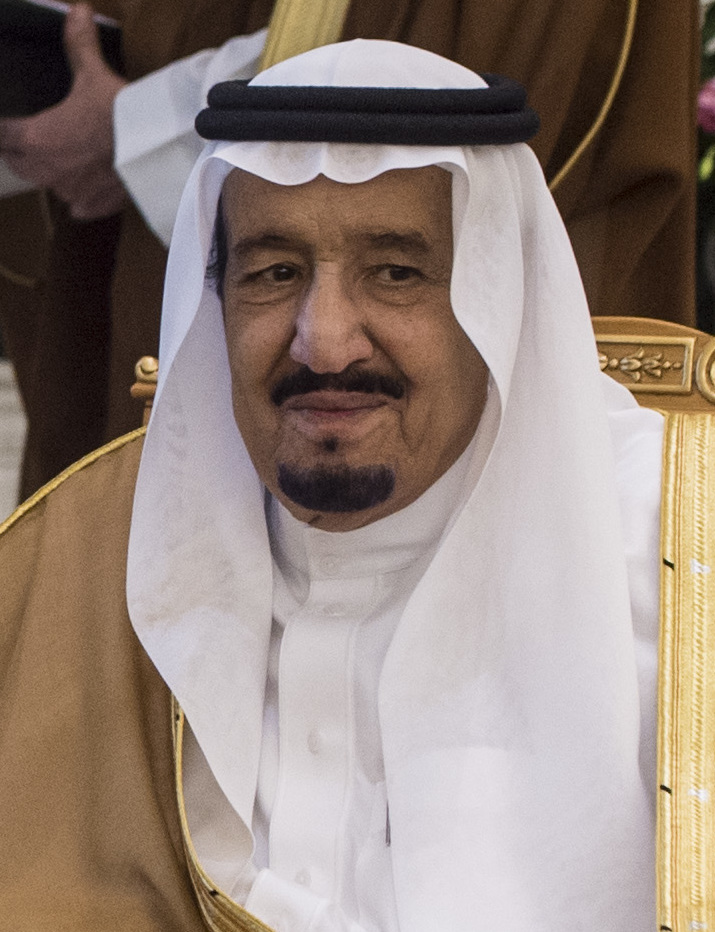

King Abdulaziz Al Saud is the founding king of the Kingdom of Saudi Arabia, and he was born on January 15, 1877, and in 1902, he regained the city of Riyadh, which was the home of his ancestors, and then went to Mecca and Medina to make it a stable for his ruling family and to establish the Kingdom of Saudi Arabia, and he died in 1953
What are the achievements of King Abdulaziz Al Saud?
In 1902, Riyadh was conquered and rid of ignorance, poverty, and disease in it, and the king had decided to unite the ranks of his nation under the slogan "There is no god but Allah, Muhammad is the Messenger of Allah", and this was only the beginning.
King Abdulaziz united the scattered parts and tribes in the Arabian Peninsula, annexing the areas of: Qassim in 1904, Al-Ahsa in 1913, Asir in 1916, and Hail in 1921, and he also conquered Taif and entered Mecca in 1924, and when he annexed Jeddah to his rule in 1925, the entire Hijaz region became subordinate to his rule, and he established an organized government in it.
The establishment of the Kingdom of Saudi Arabia was proclaimed on September 22, 1932.
He developed the administrative and organizational apparatus to administer the kingdom, establishing the position of Attorney General in the Hejaz and establishing the Saudi Shura Council and the Council of Representatives, all under the direction of his son, Prince Faisal bin Abdulaziz.
He established several ministries, established diplomatic relations, and appointed ambassadors to the kingdom.
King Saud bin Abdulaziz Al Saud

King Saud took over the rule of Saudi Arabia after the death of his father, King Abdulaziz bin Saud, and ruled the Kingdom between 1953 and 1964, and was the second king of Saudi Arabia.
What are the achievements of King Saud bin Abdulaziz Al Saud?
Establishment of the General Presidency for Girls' Education.
Establishing the first university in Saudi Arabia.
Establishing a number of ministries such as: the Ministry of Education, Health, Agriculture, Trade, and Transportation.
Expansion of the Two Holy Mosques.
King Faisal bin Abdulaziz Al Saud

King Faisal is the third king of Saudi Arabia, the third son of King Abdulaziz, and ruled the kingdom from 1964 to 1975.
What are the achievements of King Faisal bin Abdulaziz Al Saud?
He opened a lot of schools, established universities.
Cultivation phase.
He opened the port of Jeddah, and took care of roads and railways.
He opened a television station in Riyadh.
He continued to serve the Two Holy Mosques and support the Palestinian cause.
King Khalid bin Abdulaziz Al Saud

King Khalid is the fourth king of Saudi Arabia, reigning from 1975 to 1982, and his reign coincided with a number of tribulations and turmoil that he was able to overcome with his wisdom.
What are the achievements of King Khalid bin Abdulaziz Al Saud?
King Khalid continued the march of progress and prosperity in the Kingdom, establishing ministries and universities, and taking care of developing roads and transportation.
King Fahd bin Abdulaziz Al Saud
King Fahd is the fifth king of Saudi Arabia, and he is also one of the seven Sudairi who represent the children of Princess Hessa bint Ahmed Al-Sudairi, wife of King Abdulaziz, and ruled King Fahd from 1982 until his death in 2005.
What are the achievements of King Fahd bin Abdulaziz Al Saud?
During his reign, the Kingdom witnessed great progress in the economic, social, and educational fields; breakfast education and agriculture, issued many administrative regulations, expanded the Two Holy Mosques, and established the King Fahd Complex for the printing of the Holy Quran.
King Abdullah bin Abdulaziz Al Saud
King Abdullah is the sixth king of Saudi Arabia, and he assumed power after the death of his brother King Fahd in 2005, and his rule lasted 10 years, and he died in 2015.
What are the achievements of King Abdullah bin Abdulaziz Al Saud?
During his reign, the Kingdom of Saudi Arabia witnessed a great acceleration in various fields, and may God have mercy on him, he paid great attention to the development of the sectors of education, health, housing, roads, environment, water, electricity, and many others.
Achieving world peace: through the implementation of global projects that would have helped achieve world peace.
Culture and Youth: He was the first president of the Equestrian Club, and thanks to his presidency, this sport has witnessed a tangible development in the Kingdom.
Health: During his reign, King Abdullah Medical City was opened in Makkah and Madinah, and 1010 health centers were established in all cities and villages of the Kingdom, as well as many other medical achievements.
Education and Scientific Research: Among the most important educational projects established during his reign are the King Abdullah Program for Foreign Scholarships, the King Abdullah Petroleum Studies and Research Center, and Princess Nourah bint Abdulrahman University was opened to be a Saudi university for girls, and one of the largest women's universities in the world.
King Salman bin Abdulaziz Al Saud

King Salman is Saudi Arabia's seventh king and current Custodian of the Two Holy Mosques, and was pledged allegiance in 2015 as king after the death of his older brother King Abdullah.
What are the achievements of King Salman bin Abdulaziz Al Saud?
Allocate funds to housing programs, raise social security pensions, and change the government structure.
Supporting the Arab system, supporting the Palestinian cause, empowering Saudi women, and addressing the Corona pandemic.
Approving the Kingdom's Vision 2030, which includes many programs aimed at developing the sectors of economy, society, administration, culture, and others.